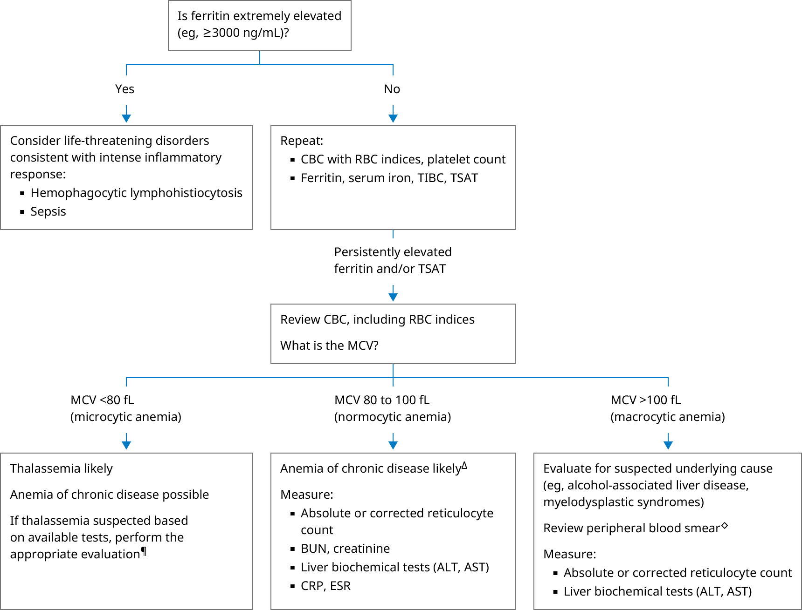

ALT: alanine aminotransferase; AST: aspartate aminotransferase; BUN: blood urea nitrogen; CBC: complete blood count; CKD: chronic kidney disease; CRP: C-reactive protein; ESR: erythrocyte sedimentation rate; MCV: mean corpuscular volume; RBC: red blood cell; TIBC: total iron binding capacity; TSAT: transferrin saturation, calculated as the ratio of serum iron to TIBC, expressed as a percentage.
* Normal serum ferritin levels range from approximately 40 to 200 ng/mL (40 to 200 mcg/L, 89.9 to 449 picomoles/L). Ranges for normal values vary, depending on sex, patient populations, and test assays used. Interpretation of a specific abnormal test result should be based upon the reference range reported with that result.
¶ Refer to additional UpToDate content on clinical manifestations and diagnosis of the thalassemias.
Δ Anemia of chronic disease should be suspected in patients with high ferritin and the following:◊ Review of the peripheral blood smear by an experienced individual may identify abnormalities not detected by automated machines.